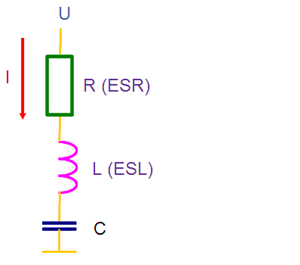
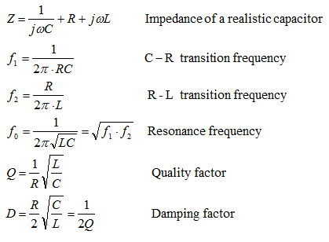
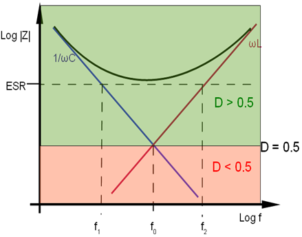

Real capacitors
In addition to capacitance, a real capacitor provides equivalent series inductance (ESL) and equivalent series resistance (ESR).

Both, ESL and ESR, are considered as ‘parasitics’ most of the time. Still they are an integrative part of the capacitive network and in certain circumstances, they even can be useful.
The following equations describe the impedance, resonance-frequency and transition frequencies of a real capacitor:

For a typical bulk capacitor, f1 is smaller than f2.
For a typical ceramic capacitor, f1 is larger than f2.
In other words:
- For all bulk capacitors: D > 0.5
- For all ceramic capacitors: D < 0.5
See also the graphic below:

Functional changes
- Introduced in SmarTest 7.2.1